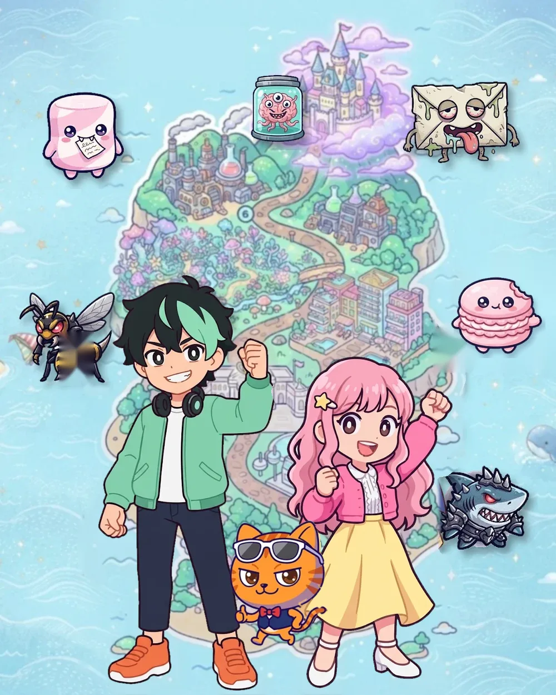
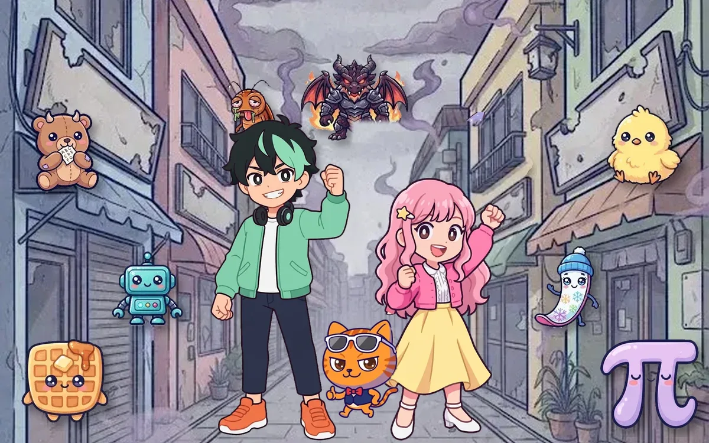
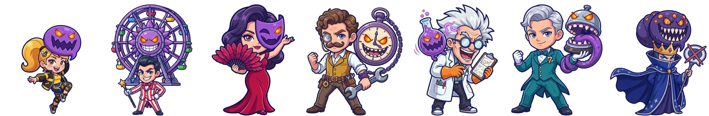
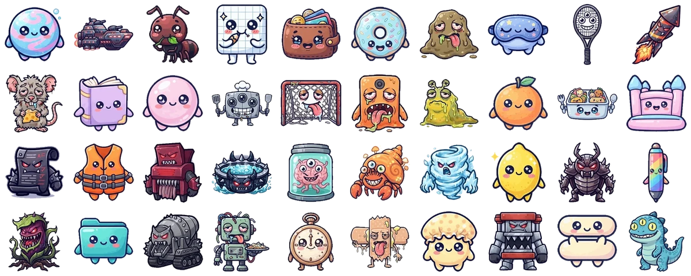

2026年12月13日 配信予定中1〜高3＋TOEIC
ゲームで遊んで、
英語がよみがえる。
ことばを食べるモンスターに英語で立ち向かう、大人の英語やり直しゲーム。単語・文法・リスニング・ライティング・タイピング・発音を、夢中で遊んでいるうちにまとめて取り戻せます。勉強モードは無料で回数制限なし。

Play now
キーボードで、モンスターを撃退！
アプリの「タイピング」で答えるモードを、ブラウザでそのまま体験できます。モンスターが近づいてくる前に、英単語を打ちこもう。
- 45秒・登録もダウンロードもいりません
- パソコンはキーボードで、スマホは画面の入力欄で
- 最初は音なし。右下のボタンで英語の読み上げをオンにできます
タイピング
バトル
日本語の意味と英単語が出るよ。モンスターが近づく前に、英単語を最後まで打てば撃退！ミスするとコンボが切れるよ。
体験版：中学英語の基本48語から出題
6 skills in one game
遊ぶだけで、6つの力がそろう。
単語アプリ、文法の参考書、リスニング教材、タイピング練習…。ばらばらにそろえていたものを、1本のゲームにまとめました。ゲームで行きづまったら、勉強モードで学んで、またゲームで実力を試す。そのくり返しで、中学・高校の英語が自然によみがえります。
単語VOCABULARY
中1〜高3とTOEICの4,459語。忘れたころにもう一度出す間隔反復で、しっかり定着。学習中の単語はゲームの敵としても出てきます。
単語帳・辞書・ゲームの単語問題
文法GRAMMAR
be動詞から仮定法まで、教本87課を例文と音声つきで。ゲームの問題はエリアごとにその学年の文法で出るので、遊ぶほど使える文法に。
教本・穴うめ・並べかえ・TOEIC Part 5
リスニングLISTENING
答えた英文はすべてネイティブの音声で読み上げ。ゆっくり再生もできます。聞いて意味を選ぶリスニングモードも。
読み上げ・リスニング・ボスのセリフ
ライティングWRITING
聞こえた英文をそのまま書く書き取りと、単語を正しい順に並べる並べかえで、自分で英文を組み立てる力を。
書き取り・並べかえ・つづり問題
タイピングTYPING
ゲームは「キーボードで答える」モードで遊べます。英単語を打つ速さと正確さが、そのまま攻撃力に。iPad・Macのキーボードで本格的に。
ゲームのキーボード回答・つづり問題
発音SPEAKING
お手本をまねして話すと、通じた単語は緑、通じなかった単語は赤でわかる発音チャレンジ。L/R・TH・V/Bなど苦手な音の言い分け練習も。
発音チャレンジ・にがて音・声で答えるモード
注：発音の判定はiPhone・iPad・Macの音声認識がその単語として聞き取れたかで行います。音声は端末の中で処理され、外部には送りません。
iPad & Mac
iPadとMacで、タイピングゲームになる。
iPadやMacで本格的に遊べる英語のタイピングゲームは、まだほとんどありません。にゃんグリッシュはキーボードで答えると、英単語を打つほど敵を倒せるタイピングゲームに変わります。英語の勉強とタイピング練習が、いっぺんに。
4つの選択肢をタップ、または声で答えてサクサク。
横画面は答えの欄を横に表示。右利き・左利きで左右を入れかえられます。
最初からキーボードで答えるモード。Appleシリコン搭載のMacで遊べます。

Game mode
中1から高3まで、190ステージの冒険。
ことばを食べるモンスターに色をうばわれた島「ワーディア」。英語で答えて敵を倒すと、町に色がもどっていきます。エリアは中1〜高3の6つと卒業試験のお城。各エリアに中ボスと、人間っぽいボスが待っています。
EASY・NORMAL・HARD
EASYは3択で時間たっぷり、まちがえた答えは消えるので初心者でも安心。HARDは語句や並べかえで本気の勝負。難易度ごとにちがう敵も出てきます。
ステージごとに景色が変わる
朝の通り、さくら並木、雨の商店街、夜の町、雪の庭園…。ステージの形もエリアごとにちがい、長いコースでも飽きません。
イベントがいっぱい
人をさらう敵を時間内に倒すとライフ回復。話していた町の人がモンスターに変身！？めったに出ないモチや色違いの敵も。
4つの答え方
選んで、打って、話して。自分に合う答え方で遊べます。声で答えると、そのままスピーキングの練習に。
クローゼット
エリアをクリアするたびにケンとリンの新しい衣装。勉強を続けるともらえるパジャマも。
日本語・韓国語・中国語
画面と訳は日本語・한국어・繁體中文に対応。家族や友だちともいっしょに。

Picture book
900体以上のモンスターずかん。
敵の名前はすべて英単語。鉛筆、マシュマロ、ブルドーザー、ドラゴン…。ずかんをうめるほど、英単語もふえていきます。ステージごと・難易度ごとにちがう敵がいるので、何度でも遊びたくなります。ボスのセリフもずかんで聞き直せます。

Study mode
毎日つづく、勉強モード。
勉強モードは無料版でも広告なし・回数制限なし。毎日のメニューをこなすとカレンダーにスタンプ。まちがえた問題は自動で「にがて復習」に集まります。
教本87課・辞書
中1〜高3の文法を例文と音声つきで。辞書は4,459語を学年でしぼりこみ。
単語帳
1日の新しい単語の数を選んで、意味・英語・聞きとり・つづりの4種類で確認。
TOEIC Part 5・模擬試験
ビジネス英語の穴うめと、30問・10分の模擬試験でスコアの目安を。
注：TOEICのスコアの目安は本アプリ独自のものです。TOEICはETSの登録商標です。本アプリはETSとは関係ありません。
Price
無料で遊べて、広告なしは買い切り。
ゲームの全ステージと勉強モードは無料で遊べます（無料版はゲームに広告あり）。プレミアムは1回払いの買い切りで、定期購入ではありません。
3,000円1,500円 買い切り
- 広告なし
- TOEICモード（Part 5・模擬試験）をすぐに開放（無料版は卒業試験のクリアで開放）
- 限定衣装「ゆかた」
FAQ
よくあるご質問
英語がすっかり苦手でも大丈夫？
大丈夫です。中1のbe動詞から始まり、EASYなら3択でまちがえた答えが消えるので、必ず正解にたどりつけます。
対応機種は？
iOS 17以降のiPhone・iPad、Appleシリコン搭載のMacです。
声で答える時、音声はどこかに送られますか？
いいえ。音声認識は端末の中で行い、録音を保存したり外部に送ったりしません。
キーボードは必要？
なくても遊べます。タップや声でも答えられます。キーボードをつなぐと、タイピングで答えるモードがもっと楽しくなります。
ほかのご質問は サポートページ へ。